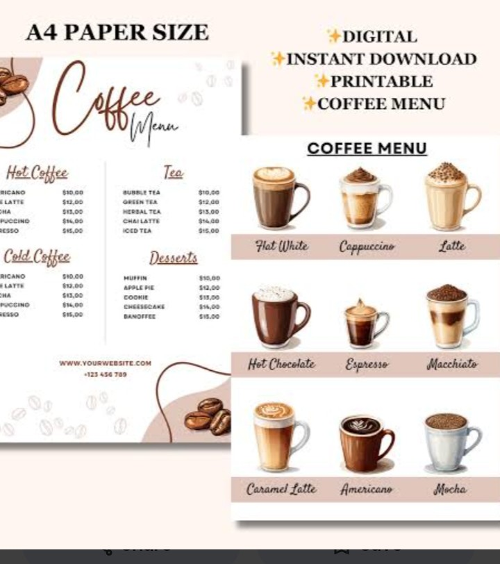
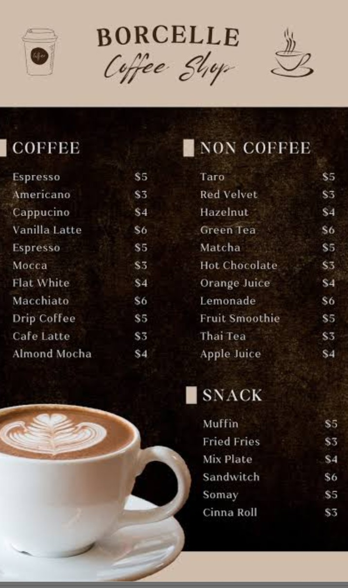
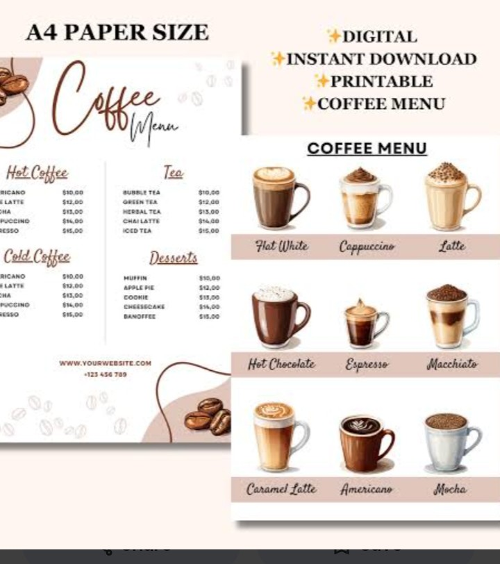
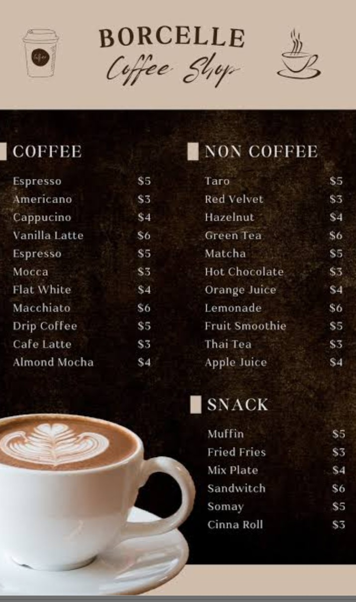

How to make perfect coffee in 9 steps.
what do you need to make coffee at home? you need the following coffee accessories:
STEP 1: THE COFFEE BEANS
The fresher and better sourced your beans are,the easier it will be for you to brew the best coffe.
STEP 2: THE RATIO OF WATER TO COFFEE
The ideal measurement for the perfect coffee is 1:17 ratuio for coffee to water. In order word,2 tablespoons of ground coffee correspond to 177ml of water.
STEP 3: GRIND THE COFFEE
For a fresh and delicious coffee,you should be grinding your beans right fbefore brewing. This will allow you to properly extract all the fragrant aromas and flavours odf the beans. To make it right,you should pay attention to three different variables:water contact time,water temperature and turbulenece which you can achieve while stiring with a spoon during the pour-over method.
STEP 4: BOIL THE WATER
Bring the water to a boil and let it cool for one minute,so it may reach a usable temperature. It is important for it not to contain any visible impurities.
STEP 5:PLACE THE FILTER
There are three different filtering method you can adopt.
Which are the (i) Metal coffe filters (ii)Cloth coffee filter (iii) Paper coffe filter
STEP 6:PLACE THE COFFEE IN THE FILTER
It's brew time! Take your ground coffee and scoop it into the middle of the newly rinsed filter.
STEP 7:POUR AND WAIT
Go with the first pour,the so-called bloom pours,resume pouring after 30-45seconds.
step 8:CONTINUE POURING
Right when the bubbles stop,resume your pouring over the next three minutes. You need to stop from time to time to allow the foam and water to subside.This pacing allows you to extract a better and less flavour.
STEP 9:ENJOY YOUR COFFEE
Lift the funnel,filter off the mug and dispose of the grouynds.Time for you to enjoy the result of your efforts!

 


